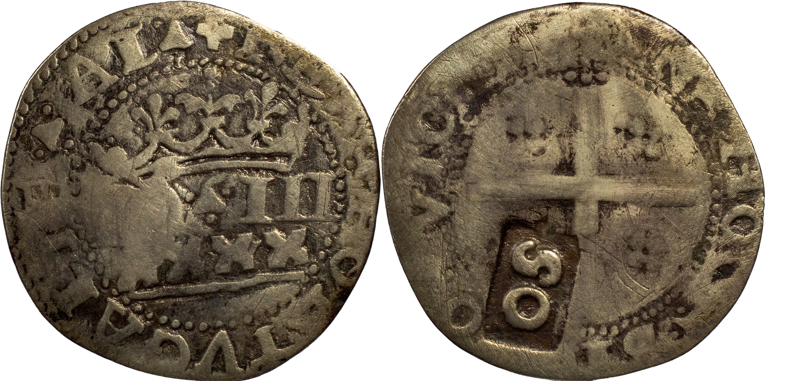

Em 1 de Fevereiro de 1642, em Lisboa, D. João IV mandava alçar o valor das moedas do reino, com a aposição de carimbos (ferros) em várias casas improvisadas um pouco por todo o país.
Sobre os "ferros" dizia-se o seguinte:
"Nesta Cidade se faraõ os ferros de cunhar cõ as deuisas de cento & vinte, cento, sessenta, & sincoẽta por figuras de algarismo, pera se differençarẽ de todos os mais cunhos, assi antigos, como modernos de maneira q se possaõ conhecer cõ certeza hũs, e outros; e feitos os ditos ferros q parecerẽ necessarios para cada hũa das ditas casas, todos no mesmo tempo, leuarão os ditos assistentes, & Cunhadores que hão de ir, a cada hũa das ditas casas, fechados em hũa boceta, com certidão do luiz, & Escriuão da moeda desta Cidade, em que se declare os ferros que leuão, & a forma delles; a qual boceta se não abrirá para os tirarem senão depois da casa estar concertada, & preparada pera se fazer obra, & estarão os ditos ferros fechados em hũa arca de três chaues, das quais hũa terá o assistente, outra oThesoureiro, outra o escriuão, na mesma casa onde se ha de cunhar, sem della se poderem tirar por nenhum caso, sob pena de encorrer a pessoa que se prouar que os tirou da dita casa, nas pennas em que pelas Ordenações do Reyno encorrẽ os q fazẽ moeda falsa."
VMA, no seu catálogo, embora sem os distinguir expressamente, identifica, como autÊnticos, dois formato distintos do algarismo "5" para o carimbo "S0", mencionando a febre de falsificações destes carimbos, com destino ao mercado brasileiro, onde são valorizados.
Pelo que a lei nos conta, temos a certeza que os ferros foram feitos em Lisboa. Logo, seria expectável que os ferros tivessem todos sido feitos com os mesmos punções "S" e "O".
Daí que entenda que apenas a primeira tipologia de "S" (em cima) identificada por VMA, correspondente ao punção do "S" usado à época na Casa da Moeda de Lisboa, represente o carimbo "SO" original.
Entendo também que a segunda tipologia de "S" (em baixo) pode até resultar de puncionamento da época, mas, nesse caso, com um carimbo falso.
Curiosamente, na única falsificação identificada por VMA (canto inferior esquerdo), parece fazer-se já uso de um "S" semelhante.
É esse tipo de "S", bem distinto do que consta nas moedas de Lisboa, que vamos encontrar aposto no lote 334 do próximo leilão da Portuscalle Numismática onde, para lá disso, podemos ver um real português de D. João III com os relevos todos avivados e sem que a esse aspecto se faça qualquer menção.
#apreço_pelo_saber
#à_discrição